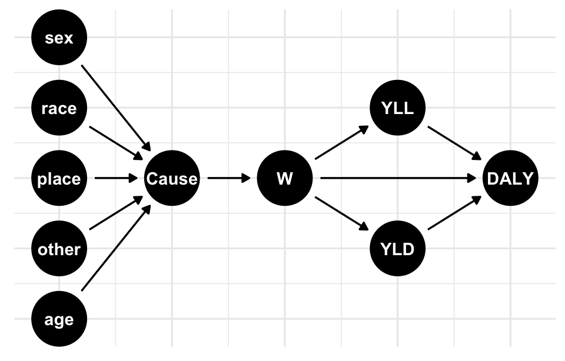
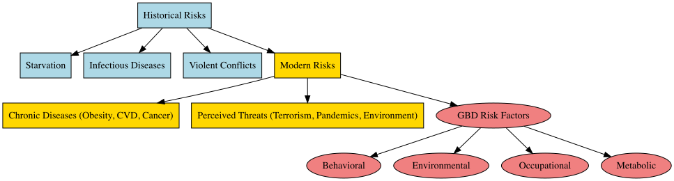
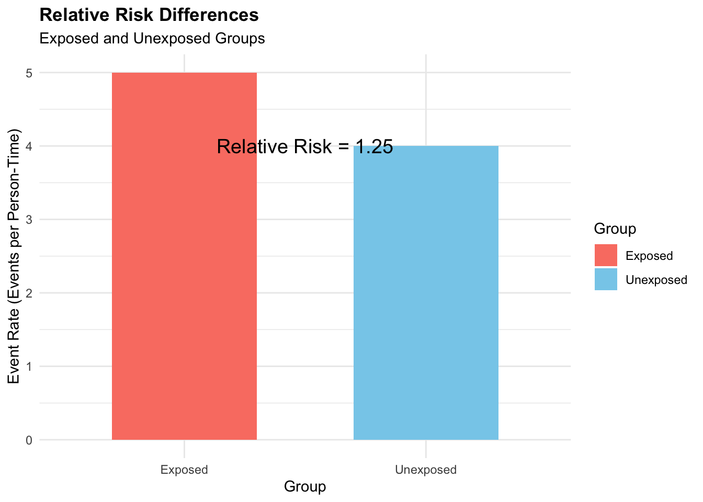
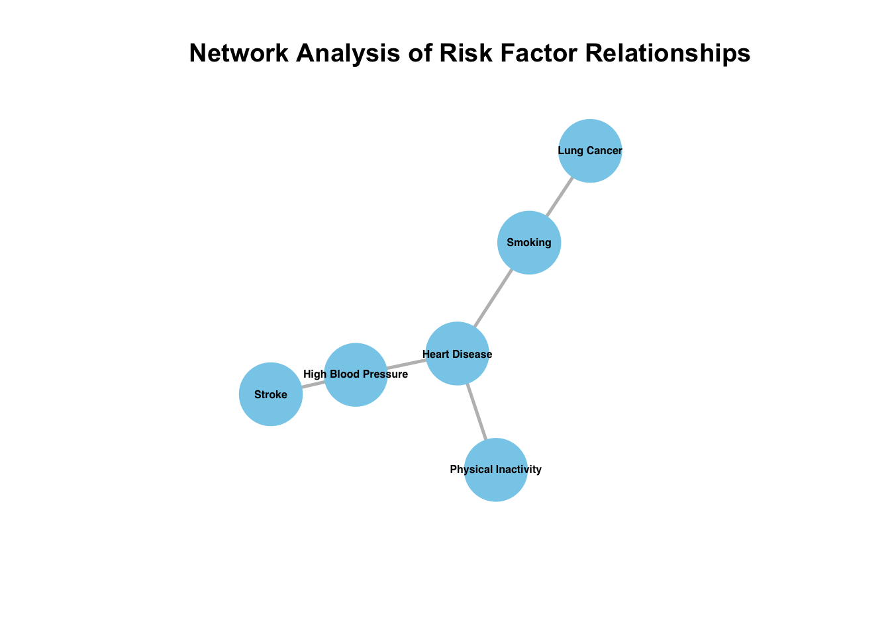
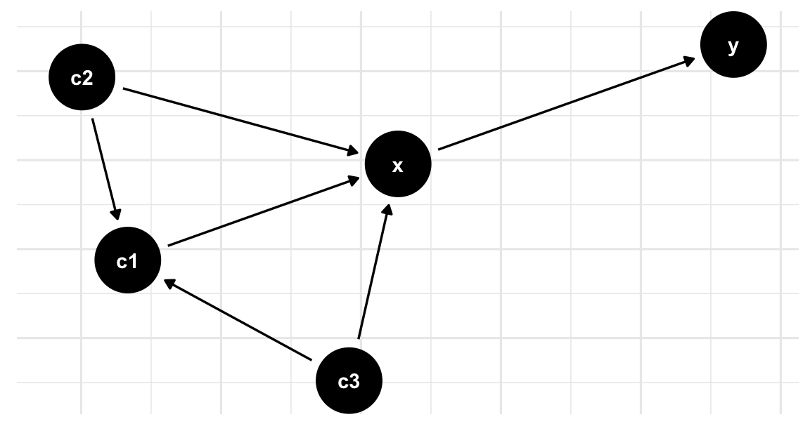
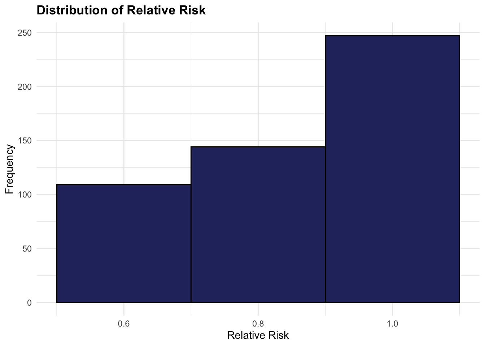
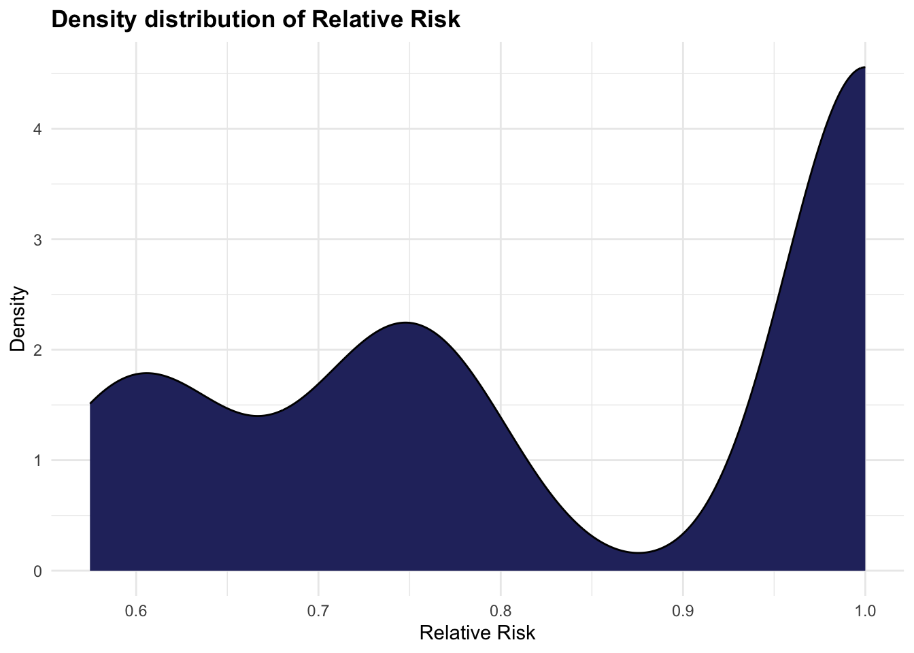
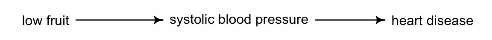
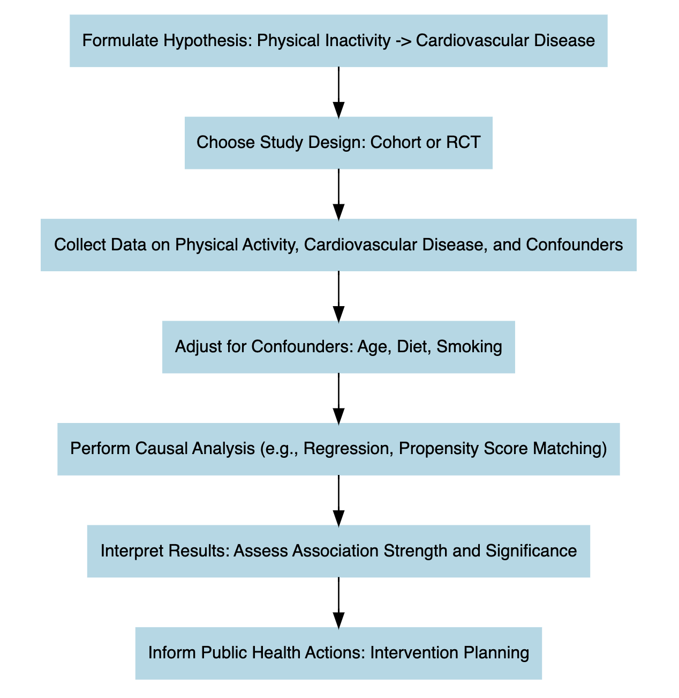

5 Causes and Risks
Learning Objectives
- Identify major causes of disease and associated risk factors using health data
- Formulate clear and focused research questions for health outcomes analysis
- Gain an introductory understanding of causal inference concepts and their application in public health research
“…fear is the most pervasive emotion of modern society…”1
What qualifies as a risk is subject to dynamic social change2 , as well as the perception of risk has evolved over time, influenced by factors such as media coverage and sociopolitical dynamics.
Historically, major risks included starvation, infections, and violent conflicts, while modern risks are often associated with lifestyle choices and chronic diseases such as obesity, cardiovascular disease, and cancer. Despite advancements in healthcare and increasing life expectancy in post-industrial countries, the focus often shifts to perceived threats like terrorism, global pandemics such as COVID-19, and environmental catastrophes. This shift is reflected in the increasing combination of quantitative analyses and public health interventions, tracking changes in risk-related discourse and identifying key risk topics over time.
Furthermore, tools like topic modelling and sentiment analysis help identify how the public perceives various risks and how these perceptions evolve over time.
In the field of public health, the latest GBD results reveal significant insights into the causes and risks associated with health metrics and infectious diseases. The primary risks identified include behavioural, environmental, occupational, and metabolic factors.

5.1 Conditions and Injuries
Conditions and injuries associated with the burden of disease and injury vary according to specific causes and risks. In this book causes and risk factors include:
- Lifestyle choices: Poor diet, physical inactivity, tobacco use, and excessive alcohol consumption are major risk factors for many chronic diseases and injuries, including heart disease, stroke, cancer, and liver disease.
- Environmental factors: Exposure to pollutants, such as air pollution and toxic chemicals, can increase the risk of certain diseases and injuries.
- Infections: Many diseases, such as tuberculosis, HIV/AIDS, and malaria, are caused by infectious agents.
- Poverty: People living in poverty are often more susceptible to health problems due to limited access to healthcare, healthy food, and safe living conditions.
- Ageing: As people get older, they are at an increased risk of many health problems, including chronic diseases and disabilities.
- Genetics: Some diseases and injuries are caused by genetic factors, such as a genetic predisposition to certain cancers.
- Injuries: Injuries, such as falls, road traffic accidents, and violence, can also contribute to the burden of diseases and injuries.
A particular health condition can have multiple causes (co-morbidities) and risk factors. For instance, a poverty status and the lack of access to healthcare facilities, is proven to be increasing the risk of infectious diseases, while poor diet and physical inactivity can increase the risk of chronic diseases. Acting in favour of addressing the underlying causes and risk factors for diseases and injuries is crucial for prompt public health interventions and can help reduce the overall burden of disease.
5.2 Risk Measures
In health metrics, risk refers to the likelihood that an individual will experience a specific health outcome, such as illness or injury, due to certain behaviours, exposures, or conditions. Risk factors are variables that increase the probability of developing a particular health condition or experiencing an adverse health outcome; they are measurable probabilities influenced by factors like lifestyle (e.g., smoking or diet), environmental exposures (e.g., air pollution), or underlying health conditions.
To provide a comprehensive framework for assessing the burden of different risk factors on population health and guide effective public health strategies to mitigate these risks, key measures are used to assess risks and their impact on health outcomes:
- Risk-specific exposures
- Relative risks (RRs)
- Theoretical Minimum-Risk Exposure Levels (TMRELs)
- Population Attributable Fractions (PAFs)
5.2.1 Risk-Specific Exposures
The quantification of risks and causes involves the evaluation of a set of behavioural, environmental and occupational, and metabolic risks. Pairs of risk-outcome are investigated based on observations and statistical evidence. Convincing evidence consists of plausible associations between exposure and disease in terms of size, duration and effects. Common examples of risk exposures in health metrics include: smoking, physical inactivity, high blood pressure (hypertension), and others.
Risk combinations can be additive (the occurrence of a least one event, A or B), multiplicative (the occurrence of both of two events, A and B) or just interactive, acting to influence other pairs, this action is generally identified as possible confounding, to be distinguished by factors in the causal pathway between exposure and outcome.
To have an idea of the impact of different risk factors on a cause of illness, the Socio-demographic Index (SDI) provides insights into the potential magnitude of social, cultural and demographic factors looking at the risk exposures and possible paths for policy interventions. The life expectancy level is closely correlated to the level of the SDI indicator as it is based on average income per person, educational attainment, and total fertility rate (TFR). Higher SDI values typically indicate better socio-economic conditions, including improved access to healthcare, education, and sanitation, which can mitigate various health risks. Conversely, lower SDI values are associated with higher risk exposure due to limited access to healthcare, poorer living conditions, and other socio-economic challenges. An application of the SDI index on time series is on Chapter 9.
One more element to take into consideration is the Comparative Risk Assessment (CRA)3 divided into attributable and avoidable burden. Considering as the objective the potential reduction of future disease burden, four types of minimum risk exposure distributions are identified:
- Theoretical
- Plausible
- Feasible
- Cost-effective
The following provide a high level overview on quantifying attributable burden by using the theoretical minimum risk.
5.2.2 Relative Risks (RRs)
The relative risk (or Risk Ratio) is a measure of the strength of the association between an exposure and an outcome. It compares the likelihood of a particular health outcome, occurring in individuals exposed to a specific risk factor, to the likelihood in those who are not exposed. This metric helps quantify how much a risk factor, like smoking or high blood pressure, increases the probability of an adverse health effect.
To calculate the risk-outcome pairs, such as mortality and morbidity, the attributable burden of a risk is decomposed to identify the impact on disease burden across factors like location, age, sex, and specific causes of disease.4 This decomposition considers the combined effect of all risk exposures, which are categorised into metabolic, behavioural, and environmental risk factors. Each category contributes distinctly to the overall health outcome, enabling a nuanced understanding of how multiple exposures collectively influence disease burden and health outcomes.
The relative risk is the ratio between the proportions of exposed and unexposed groups.
RR= \frac{p_0}{p_1} \tag{5.1}
where p_1 and p_0 are the proportions of exposed and unexposed groups respectively. Or, in terms of population, these group would approx the values of the real population:
RR = \frac{p_1}{p_0}=\frac{d_1/n_1}{d_0/n_0} \tag{5.2}
where d_1/n_1 and d_0/n_0 are the proportion of the population with and without the disease.
For example, let’s say we are studying the association between smoking (exposure) and lung cancer (outcome). We want to calculate the relative risk of lung cancer among smokers compared to non-smokers. If the relative risk is 2, it means that smokers are twice as likely to develop lung cancer compared to non-smokers.
exposed <- c(50, 10)
unexposed <- c(20, 5)
# Calculate the relative risk
relative_risk <- function(exposed, unexposed) {
(exposed[1] / sum(exposed)) / (unexposed[1] / sum(unexposed))
}
relative_risk(exposed, unexposed)
#> [1] 1.041667In this case, a relative risk of 1.04 indicates that the exposed group is 1.04 times more likely to develop the outcome compared to the unexposed group.
A second example is to calculate the relative risk based on the number of events and person-time at risk for exposed and unexposed groups. Let’s consider the following scenario:
d1 <- 50 # Number of events in the exposed group
n1 <- 10 # Person-time at risk in the exposed group
d0 <- 20 # Number of events in the unexposed group
n0 <- 5 # Person-time at risk in the unexposed group
# Calculate the relative risk
relative_risk_d <- (d1 / n1) / (d0 / n0)
# Print the relative risk
relative_risk_d
#> [1] 1.25In this case, the relative risk based on the number of events and person-time at risk is 1.25, indicating that the exposed group has a 1.25 times higher risk of developing the outcome compared to the unexposed group.

In summary, the relative risk can be calculated using two different formulas:
- The first formula, RR=p_1/p_0, calculates the relative risk directly using the proportions of events p_1 in the exposed group compared to the unexposed group p_0 . This formula provides a more simplified view of the relative risk based solely on event proportions.
- The second formula, RR=\frac{d_1/n_1}{d_0/n_0}, considers both the number of events (d1, d0) and person-time at risk (n1, n0) for each group. This formula takes into account the incidence rate in addition to event proportions, providing a more specific understanding of the relative risk by incorporating information about the duration of exposure.
5.2.3 Relative Risks and Network Analysis
In some cases, relative risks can be modelled using network analysis, a specialised approach within statistical modelling which extends the concept of mixed effects to compare multiple treatments while accounting for various factors and dependencies. The relationship between variables, represented by nodes and edges, considers the potential interactions or dependencies between different risk factors and outcomes. This approach is generally favourable when exploring complex relationships among multiple variables.
To represent the network we can use a Directed Acyclic Graph (DAG) for drawing causal relationships between variables, such as the relationship between health risks and diseases.
This is an example of a Network graph representing the causal pathways between different variables, such as smoking, physical inactivity, high blood pressure, lung cancer, heart disease, and stroke. By visualising the relationships between these variables, we can identify the direct and indirect effects of risk factors on health outcomes.

The following code shows one more example of a network graph that would be helpful to identify the relationship between outcome (O), exposure (E) and different risk factors made with the {ggdag} package and the dagify() function.
# Load the library
library(ggdag)
set.seed(555)
# Define the DAG structure
dag <- dagify(
y ~ x,
x ~ c1 + c2 + c3,
c1 ~ c2 + c3,
c1 ~ c3)
# Plot the DAG
ggdag(dag) + theme_dag_grid()
5.2.3.1 Simulation of Risk Exposure
The simulation of the risk exposure can be done replicating a logistic regression model with a DAG structure. We can use the {dagitty} package, and the simulateLogistic() function. The model estimates the probability of an outcome (O), given exposure (E) to different risk factors, such as C1, C2, and C3 (confounders). The relative risk is calculated based on the estimated probabilities of the outcome given exposure and no exposure to the risk factors.
# Load necessary libraries
library(dagitty)
library(tidyverse)
# Create DAG structure
dag <- dagitty("dag { E -> O
C1 -> O
C2 -> O
C3 -> O }")
dat <- dag %>% tidy_dagitty()
# Generate data
set.seed(123)
n <- 1000
data <- simulateLogistic(dag)
head(data)
#> C1 C2 C3 E O
#> 1 1 -1 1 1 -1
#> 2 -1 -1 -1 1 1
#> 3 1 1 1 1 1
#> 4 1 1 -1 -1 -1
#> 5 1 1 -1 -1 -1
#> 6 -1 -1 -1 1 1# Fit logistic regression model
model <- glm(O ~ E + C1 + C2 + C3,
data = data,
family = "binomial")
# Extract estimated probabilities
pr_outcome_exp <- predict(model, type = "response")
pr_outcome_no_exp <- predict(model,
newdata = data.frame(E = "1",
C1 = data$C1,
C2 = data$C2,
C3 = data$C3),
type = "response")
# Calculate relative risk
relative_risk <- pr_outcome_exp / pr_outcome_no_exp

5.2.4 Theoretical Minimum-Risk Exposure Levels (TMRELs)
Risk factors associated with a particular health condition are considered based on the Theoretical minimum risk exposure levels (TMRELs) and as a function of the risk exposure or relative risk (RR) value. Not all the variables that are thought to be risk factors increasing causes for a particular health condition are always the driving cause of the condition, for this reason a minimum level of risk exposure is established for the risk to be considered involved as effective in the outcome.
Moreover, disease attributable to a particular risk factor or combination of risk factors need to be ascertained by investigating the risk-outcome relationship. Risk factors can also act indirectly on the outcome via intermediate risks, such as the association of low fruit consumption and heart disease influenced by systolic blood pressure which acts as mediator between the two.

Examples of risk factors with established Theoretical Minimum Risk Exposure Levels (TMRELs) include particulate matter air pollution, high systolic blood pressure, and smoking. For systolic blood pressure, the TMREL is typically set around 110/70 mmHg. Research has shown that maintaining blood pressure near this level is associated with the lowest risk for cardiovascular disease and stroke. Similarly, for particulate matter air pollution, the TMREL is set at the lowest level of exposure that is feasible and achievable, typically based on World Health Organization (WHO) guidelines. For smoking, the TMREL is set at zero, as any level of smoking is associated with increased health risks.
In terms of Disability-Adjusted Life Years (DALYs), the overall level is significantly influenced by behavioural, environmental, and occupational risks. Behavioural risks, such as smoking and physical inactivity, and environmental exposures, like air pollution, contribute heavily to DALYs by increasing both mortality and disability rates within affected populations. Occupational risks further add to the burden, particularly in regions where workplace safety standards are lower, underscoring the need for targeted interventions across different population groups.
5.2.5 Population Attributable Fractions (PAFs)
The Population Attributable Fraction (PAF) is a measure used to quantify the proportion of disease incidence in a population that can be attributed to a specific risk factor. It represents the proportion of risk that would be reduced in a given year if the exposure to a risk factor in the past were reduced to an ideal exposure scenario.
PAF is calculated based on the prevalence of the risk factor in the population and the relative risk associated with that risk factor. The formula for calculating PAF is as follows:
PAF = \frac{{P_e \times (RR - 1)}}{{1 + P_e \times (RR - 1)}} \tag{5.3}
Where:
- P_e is the prevalence of the risk factor in the population.
- RR is the relative risk associated with the risk factor, representing the increased risk of disease among individuals exposed to the risk factor compared to those who are not exposed.
The PAF ranges from 0% to 100%. A PAF of 0% indicates that the risk factor has no impact on the incidence of the disease, while a PAF of 100% indicates that all cases of the disease in the population can be attributed to the risk factor.
PAF is useful for public health interventions as it provides insight into the potential impact of reducing or eliminating a specific risk factor on the incidence of disease in the population. By targeting interventions to reduce exposure to the risk factor, public health efforts can effectively reduce the burden of disease in the population and improve overall health outcomes.
5.3 Causal Inference
Causality concerns the relationship between two variables, where one variable (the cause) directly influences the other (the effect). For example, regular exercise improves cardiovascular health, or adequate sleep supports cognitive function. However, causality is distinct from correlation, which indicates a statistical association without implying a direct influence. For instance, a correlation between television watching and obesity does not imply a causal link. Establishing causality requires systematically evaluating alternative explanations and accounting for confounding factors that could affect both the cause and effect.
Causal inference is essential for understanding the underlying causes of a condition or phenomenon, even if these causes are not immediately apparent. It often requires a structured data analysis to uncover hidden causal relationships within the observed data.

Performing causal inference requires setting up an experiment, where there are treatment and outcome elements. The treatment is the intervention applied to the data. For example, to confirm the statement that regular exercise leads to improved cardiovascular health, an intervention may be designed to introduce another variable, such as regular fruit consumption, and observe its combined effect with exercise on cardiovascular health.
In this investigation, the primary factors are exercise and fruit intake. The goal is to examine whether their combination improves cardiovascular health. Once the intervention is analysed by measuring changes in cardiovascular health (the response variable), the next step is to apply a control procedure, often using a counterfactual scenario. This approach helps assess what might have happened in the absence of the treatment, providing a benchmark to confirm the treatment’s true effect.
5.4 Summarising the Relationship Between Risk and Outcome
The relationship between risk and outcome in epidemiology is central to understanding the causes of disease and guiding preventive strategies. This relationship involves assessing how exposure to certain risk factors affects the likelihood of developing specific health outcomes. Epidemiological studies quantify the strength of this association through measures like Relative Risk (RR) and Population Attributable Fraction (PAF).
Relative Risk (RR) compares the risk of developing a health outcome among individuals exposed to a risk factor with those who are not exposed. An RR greater than 1 indicates an increased risk associated with the exposure. For example, if smokers have a relative risk of 15 for lung cancer compared to non-smokers, this suggests a strong association between smoking and lung cancer.
Population Attributable Fraction (PAF) estimates the proportion of disease incidence in a population that can be attributed to a specific risk factor, helping quantify the potential impact of reducing or eliminating that exposure on the overall disease burden. For example, if smoking accounts for 30% of lung cancer cases in a population, the PAF for smoking-related lung cancer is 0.30.
To establish causality, epidemiologists must demonstrate consistent associations, dose-response relationships (where increased exposure heightens risk), temporal precedence (exposure precedes outcome), and rule out alternative explanations. Ultimately, understanding these risk-outcome relationships enables evidence-based public health decisions, informing preventive strategies, interventions, and policies to improve population health.
| Risk Measure | Definition | Example |
|---|---|---|
| Relative Risk (RR) | Measures the likelihood of an outcome occurring in an exposed group relative to a non-exposed group. | Smokers have a 15x higher relative risk (RR = 15) of lung cancer compared to non-smokers. |
| Population Attributable Fraction (PAF) | Estimates the proportion of disease cases that could be prevented if a specific risk factor were eliminated. | If smoking accounts for 30% of lung cancer cases, then the PAF for smoking is 0.30. |
| Theoretical Minimum Risk Exposure Level (TMREL) | Represents the ideal level of exposure to a risk factor that minimises adverse health effects. | The TMREL for PM2.5 (air pollution) is set around 2.4 \mug/m^3, as exposure below this level is associated with minimal health risk. |
In conclusion, the study of risk and outcome has evolved beyond traditional epidemiological methods to embrace advanced techniques like transfer learning. This interdisciplinary approach enables the application of insights from epidemiology to other fields and viceversa, deepening our understanding of the complex relationships between risk factors and health outcomes. Machine learning and data-driven techniques help identifying patterns, and develop predictive models that extend beyond conventional frameworks, offering fresh perspectives on population health and guiding targeted interventions.
Joanna Bourke, Fear: A Cultural History (Catapult, 2007).↩︎
Ying Li, Thomas Hills, and Ralph Hertwig, “A Brief History of Risk,” Cognition 203 (October 2020): 104344, doi:10.1016/j.cognition.2020.104344.↩︎
Jeffrey D Stanaway et al., “Global, Regional, and National Comparative Risk Assessment of 84 Behavioural, Environmental and Occupational, and Metabolic Risks or Clusters of Risks for 195 Countries and Territories, 19902017: A Systematic Analysis for the Global Burden of Disease Study 2017,” The Lancet 392, no. 10159 (November 2018): 1923–94, doi:10.1016/s0140-6736(18)32225-6.↩︎
Christopher J. L. Murray et al., “Global Burden of 87 Risk Factors in 204 Countries and Territories, 19902019: A Systematic Analysis for the Global Burden of Disease Study 2019,” The Lancet 396, no. 10258 (October 17, 2020): 1223–49, doi:10.1016/S0140-6736(20)30752-2.↩︎